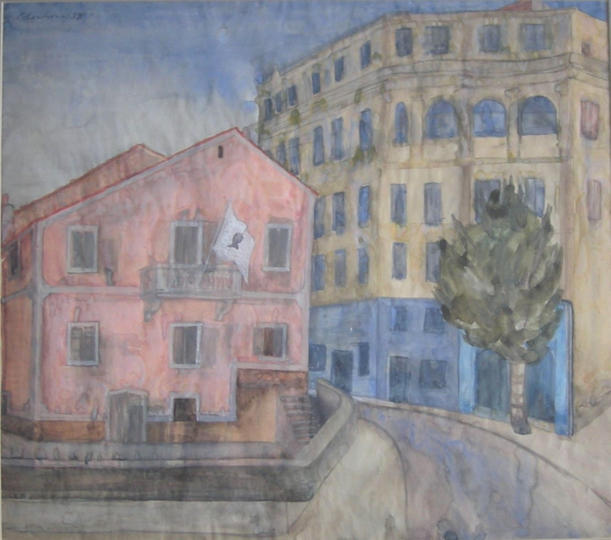

Ithell Colquhoun
1906 – 1988
Artist Biography
Colquhoun was a pioneer surrealist artist, occultist, writer and poet. She also experimented with different painting techniques, such as enamel and decalcomania, throughout her life. Born in Assam, India she studied at Slade School of Fine Art 1927-31, then privately in Paris and Athens. She showed extensively, including London Group, Contemporary Art Society, Tate Gallery and abroad and had solo shows at Fine Art Society, Mayor Gallery and elsewhere. She was expelled from the London surrealist group in 1940 for refusing to conform to its dictates. She continued as an independent painter in London and Paul, Cornwall, and with touring exhibitions abroad. Newlyn Orion Gallery held a major retrospective in 1977. Colquhoun was represented in the last Tate Gallery exhibition on surrealism and her work was most recently shown in the Mayor Gallery, London’s 2009 exhibition on British Surrealism. In addition to the Tate Gallery, her work is held in public galleries at Hove, Bradford and Cheltenham amongst others and the National Trust manages her estate. A monograph on her life and work was published in 2007.

Street, Corsica, 1938